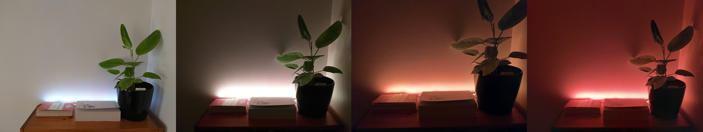
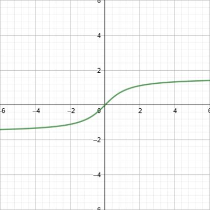
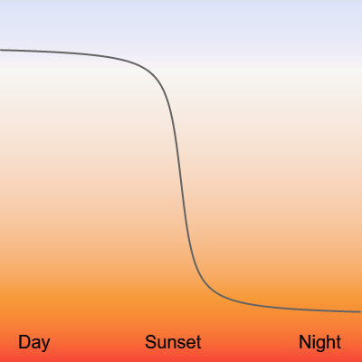
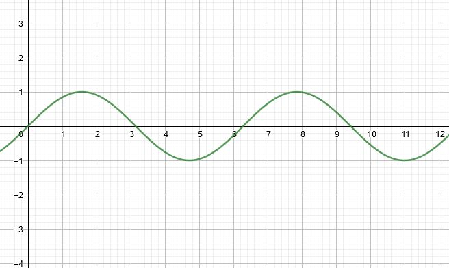
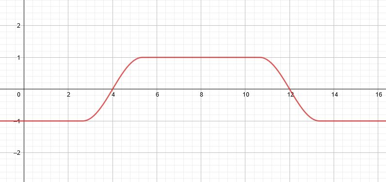
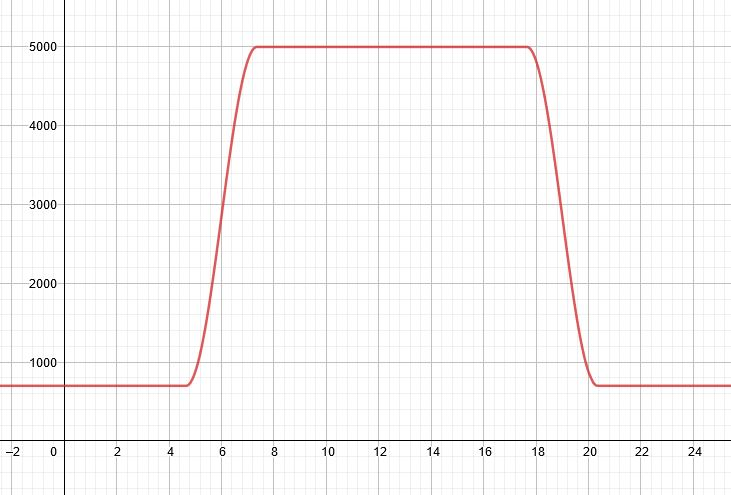

Circadian LED Strip lighting
Introduction
After experimenting with automatic blue light filters on my electronic devices I wanted to replicate the idea with the lighting around the house so that it would gradually transition to warmer colours as the night progresses. I believe this kind of feature does exist in some commercial lights, but I did not want to spend heaps of money and also wanted to make it customisable so that I could add things like animations later down the track.
Circadian LED Strip lightingIntroductionSetupAutomatic Blue Light FilterChanging the LED strip colour to the specific RGB valuesConverting colour temperatures from Kelvin (K) to RGBChoosing Colour temperature rangeGetting the current timeChoosing the transitioning functionInverse Tangent (Arctan)Sine graphGetting the sunset and sunrise timesPutting it all togetherNext Steps
Setup
The setup for this project mimics the setup that was explained in the tutorial for controlling a strip of ws2812 LEDs with a Raspberry Pi by Core Electronics. The page can be found here: https://core-electronics.com.au/tutorials/ws2812-addressable-leds-raspberry-pi-quickstart-guide.html
If you would like to use the raspberry pi without a monitor, keyboard, and mouse, here is a tutorial on how to do so: https://www.windowscentral.com/how-set-headless-raspberry-pi-windows-10 for windows users.
Automatic Blue Light Filter
Changing the LED strip colour to the specific RGB values
Before we start considering anything to do with 'warm' and 'cool' colours, we want to first be able to display a specific colour on the led strips.
I am going to assume that you have setup the led strips and have been able to get the python examples to work without any issues. There will be a link at the start of this tutorial to a useful page showing you how to do so.
First we need to import some things from the rpi_ws281x library:
xxxxxxxxxx
1
1
from rpi_ws281x import PixelStrip, Color
Next we need to define a bunch of constants that are required to instantiate (basically setup) the led strip object.
xxxxxxxxxx
14
1
# LED strip configuration:
2
LED_COUNT = 120 # Number of LED pixels.
3
LED_PIN = 18 # GPIO pin connected to the pixels (18 uses PWM!).
4
# LED_PIN = 10 # GPIO pin connected to the pixels (10 uses SPI /dev/spidev0.0).
5
LED_FREQ_HZ = 800000 # LED signal frequency in hertz (usually 800khz)
6
LED_DMA = 10 # DMA channel to use for generating signal (try 10)
7
LED_BRIGHTNESS = 255 # Set to 0 for darkest and 255 for brightest
8
LED_INVERT = False # True to invert the signal (when using NPN transistor level shift)
9
LED_CHANNEL = 0 # set to '1' for GPIOs 13, 19, 41, 45 or 53
10
11
# Create NeoPixel object with appropriate configuration.
12
pixels = PixelStrip(LED_COUNT, LED_PIN, LED_FREQ_HZ, LED_DMA, LED_INVERT, LED_BRIGHTNESS, LED_CHANNEL)
13
# Intialize the library (must be called once before other functions).
14
pixels.begin()
Don't worry if you do not understand some of the comments, they
are taken from an example in the rpi_ws218x
library. We only need to change the LED_COUNT variable and the LED_PIN
variable for the moment. You can play around with changing the LED_BRIGHTNESS variable
to your preference.
The LED_COUNT
variable should be set to the total number of led's in your led
strip. The LED_PIN
variable should be set to the GPIO pin that you connected the led
strip to on the raspberry pi. For example, If you used GPIO 18, it
should be set to 18.
Next, how to display a colour across the whole led strip:
xxxxxxxxxx
6
1
def display_colour(red, green, blue):
2
for i in range(strip.numPixels()):
3
strip.setPixelColor(i, Color(red, green, blue))
4
strip.show()
5
6
display_colour(200, 50, 0)
Basically we just have to loop through each individual led and set it
to the colour that was specified. strip.show()
will display what is in the buffer to the pixels, so we can call it in
each iteration of the for loop to get the effect of the new colour
'sweeping' across the led strips. Or, if you want all of the
led pixels to update at once, just move strip.show() to after the for loop.
Converting colour temperatures from Kelvin (K) to RGB
First we want to consider how we go about finding the RGB values of 'cool' and 'warm' colours. We use 'Colour Temperature' as a way of describing how cool or warm a colour is. Cooler colours are more blueish, and warmer colours are more reddish. The Colour Temperature is measured in Kelvins (K) which is a measurement for temperature just like Fahrenheit or Celsius but is typically used for more scientific contexts. Feel free to research more about colour temperature, however it is not necessary for understanding this project. I found a useful page with some pseudo-code for how to convert from colour temperature to RGB values. The page: https://tannerhelland.com/2012/09/18/convert-temperature-rgb-algorithm-code.html.
My python version of the pseudo-code from the above link:
xxxxxxxxxx
46
1
import math # we need the math library to calculate logarithms
2
3
def clamp(n, minn, maxn):
4
# function for limiting a number to a specified number range
5
return max(min(maxn, n), minn)
6
7
def convertTempToRGB(temp):
8
# Function for converting a colour temperature in Kelvin (K) to RGB
9
# Algorithm from: https://tannerhelland.com/2012/09/18/convert-temperature-rgb-algorithm-code.html
10
11
temp = temp / 100
12
red = 0
13
green = 0
14
blue = 0
15
16
# RED
17
if temp <= 66:
18
red = 255
19
else:
20
red = temp - 60
21
red = 329.698727446 * (red ** -0.1332047592)
22
red = clamp(red, 0, 255)
23
24
# GREEN
25
if temp <= 66:
26
green = temp
27
green = 99.4708025861 * math.log(green) - 161.1195681661
28
green = clamp(green, 0, 255)
29
else:
30
green = temp - 60
31
green = 288.1221695283 * (green ** -0.0755148492)
32
green = clamp(green, 0, 255)
33
34
# BLUE
35
if temp >= 66:
36
blue = 255
37
else:
38
if temp <= 19:
39
blue = 0
40
else:
41
blue = temp - 10
42
blue = 138.5177312231 * math.log(blue) - 305.0447927307
43
blue = clamp(blue, 0, 255)
44
45
# round() is used because the leds only require integer values. Can be omitted for other use cases
46
return (round(red), round(green), round(blue))
This algorithm will give you a level of precision that is complete
overkill for our application. It will give you values to a precision
of 10 decimal places. This is unnecessary for any typical led strip,
which only allows for integer values between 0 - 255 for the red,
green, and blue values. However it is a very very small amount of work
for the pi zero so I have left the algorithm intact (apart from adding round()).
Choosing Colour temperature range
The next thing to consider is the range of colours that the led strips will transition through during the evening.
Some example temperature ranges shown as a gradient:
| 10000K (top) to 700K (bottom) | 8000K (top) to 2000K (bottom) | 4000K (top) to 600K (bottom) |
|---|---|---|

|

|

|
One thing to bear in mind is that these will look very different on a set of led strips than on a computer screen, so you will have to experiment with what looks better on the led strips. For example, without any kind of colour correction, the range shown in the image on the right appears to all be a blend of orange and red but the values from about 4000K to 2500K appear as mainly white on the LEDs
You can test how different colour temperatures will look on your led strip with the functions we have created so far. For example, adding this at the end of the file:
xxxxxxxxxx
2
1
red, green, blue = convertTempToRGB(1000) # change 1000 to any colour temp
2
displayColour(red, green, blue)
Getting the current time
This can be done easily with python using the datetime
library in python. You may also need to adjust the time zone of your
raspberry pi to get the correct time for your location. You can find
how to do that here: https://raspberrytips.com/time-sync-raspberry-pi/
xxxxxxxxxx
7
1
import datetime
2
3
def get_current_time():
4
time = datetime.datetime.now()
5
hour = time.hour
6
minute = time.minute
7
return hour, minute
We are storing the time as a tuple (basically two separate values for hour and minute stored together) so that it is easier to work with later.
Choosing the transitioning function
Now we have to figure out how we want the colour temperature to transition as the time progresses. We can choose from a variety of different mathematical functions to get the right transition that we want.
Inverse Tangent (Arctan)
|  |  |
Originally this was my preference because it does the bulk of colour changing around the sunset time but still changes slightly at other hours. However, when trying to extend this curve so that it could be used for sunrise as well and have a smooth transition over a full 24 hour period, it got more complicated.
The only solution I could think of was to basically stitch together 4
arctan graphs each with slightly different horizontal translations
(how much they are shifted left or right), and then depending on the
hour, pick one of the 4 graphs. This gave a smooth transition over a
24 hour period at the expense of some confusing code and the fact that
the temperatures won't actually reach the Min or Max
temperatures.
The alternative to that was to do a similar thing but with a sine graph. Using a section of a sine graph for sunrise and the reverse for sunset, and for any hours in between, the colour temperature will be either the minimum (night time) or the maximum (daytime).
The two methods both had their merits and I couldn't decide which to use in the project so I just included both in the final code.
Sine graph
A typical sine graph looks like this...

We want some sections of the graph to be relatively flat (for during the day and during night), so we can cut and paste some sections of a sine graph and some straight lines and get something like this:

If we apply the right dilations to make it useful for our purpose we get something like this:

Colour temperature is the vertical axis and hour of the day is on the horizontal axis.
The equation written in maths is below:
-
Maxis the maximum colour temperature, or the daytime colour temperature. -
Minis the minimum colour temperature, or the night time colour temperature. sunriseis the sunrise timesunsetis the sunset time-
hoursis the number of hours during sunset or sunrise that we want the colour changing to occur for. e.g, 2 hours
The python version of this:
xxxxxxxxxx
17
1
def get_current_temp(time, Max=4000, Min=650, hours=2, sunset=(20, 0), sunrise=(6, 0)):
2
time = time[0] + time[1]/60
3
sunset = sunset[0] + sunset[1]/60
4
sunrise = sunrise[0] + sunrise[1]/60
5
6
n = math.pi / hours
7
8
if time < sunrise - hours/2:
9
return Min
10
elif time < sunrise + hours/2:
11
return ((Max - Min) / 2) * math.sin(n * (time - sunrise)) + ((Max + Min) / 2)
12
elif time < sunset - hours/2:
13
return Max
14
elif time < sunset + hours/2:
15
return -1 * ((Max - Min) / 2) * math.sin(n * (time - sunset)) + ((Max + Min) / 2)
16
else:
17
return Min
So far our basic flow is:
Getting the sunset and sunrise times
Because the sunrise and sunset times can change by a few hours in different parts of the year, I wanted to use the current sunset and sunrise times for my location. There are a few APIs that are available to do this, some of which do not seem to take things like day light savings into account. https://ipgeolocation.io/astronomy-api.html was the one I used and seemed to work quite well. Instead of having to worry about finding out my longitude and latitude I could just use the nearest city in the request. In order to use this service you will have to make an account (free account) with them to get an API key to use in the requests.
A simple get request to get the sunrise and sunset times is below:
x
1
import requests
2
import json
3
import constants # a file called constants.py that you need to put in the same directory as app.py
4
5
6
def get_sunset_sunrise_time():
7
8
# these values are from the constants.py file
9
city = constants.CITY
10
api_key = constants.API_KEY
11
12
response = requests.get(f"https://api.ipgeolocation.io/astronomy?apiKey={api_key}&location={city}")
13
14
response = json.loads(response.content)
15
sunrise = response["sunrise"]
16
sunset = response["sunset"]
17
date = response["date"]
18
19
logging.info(f"Today's date: {date}, sunrise: {sunrise}, sunset: {sunset}")
20
21
sunrise = sunrise.split(":")
22
sunrise = (int(sunrise[0]), int(sunrise[1]))
23
24
sunset = sunset.split(":")
25
sunset = (int(sunset[0]), int(sunset[1]))
26
27
return {"sunrise": sunrise, "sunset": sunset}
constants.py:
xxxxxxxxxx
2
1
API_KEY = "d3f1n1t3ly 4n ap1 k3y"
2
CITY = "canberra"
replace the values in constants.py to match your API key and your nearest city.
Putting it all together
This flow chart summarises the main structure of the code:
Here is the final python code:
xxxxxxxxxx
167
1
from rpi_ws281x import PixelStrip, Color
2
import math
3
import time
4
import datetime
5
import logging
6
import requests
7
import json
8
import constants # a file called constants.py that you need to put in the same directory as app.py
9
10
# LED strip configuration:
11
LED_COUNT = 119 # Number of LED pixels.
12
LED_PIN = 18 # GPIO pin connected to the pixels (18 uses PWM!).
13
# LED_PIN = 10 # GPIO pin connected to the pixels (10 uses SPI /dev/spidev0.0).
14
LED_FREQ_HZ = 800000 # LED signal frequency in hertz (usually 800khz)
15
LED_DMA = 10 # DMA channel to use for generating signal (try 10)
16
LED_BRIGHTNESS = 255 # Set to 0 for darkest and 255 for brightest
17
LED_INVERT = False # True to invert the signal (when using NPN transistor level shift)
18
LED_CHANNEL = 0 # set to '1' for GPIOs 13, 19, 41, 45 or 53
19
20
# Create NeoPixel object with appropriate configuration.
21
strip = PixelStrip(LED_COUNT, LED_PIN, LED_FREQ_HZ, LED_DMA, LED_INVERT, LED_BRIGHTNESS, LED_CHANNEL)
22
# Intialize the library (must be called once before other functions).
23
strip.begin()
24
25
def display_colour(red, green, blue):
26
for i in range(strip.numPixels()):
27
strip.setPixelColor(i, Color(red, green, blue))
28
strip.show() # if you don't want the effect of each pixel changing one by one, move this to after the for loop
29
30
31
def clamp(n, minn, maxn):
32
# Function for limiting a number to a specified number range
33
return max(min(maxn, n), minn)
34
35
36
def convertTempToRGB(temp):
37
# Function for converting a colour temperature in Kelvin (K) to RGB
38
# Algorithm from: https://tannerhelland.com/2012/09/18/convert-temperature-rgb-algorithm-code.html
39
40
temp = temp / 100
41
red = 0
42
green = 0
43
blue = 0
44
45
# RED
46
if temp <= 66:
47
red = 255
48
else:
49
red = temp - 60
50
red = 329.698727446 * (red ** -0.1332047592)
51
red = clamp(red, 0, 255)
52
53
# GREEN
54
if temp <= 66:
55
green = temp
56
green = 99.4708025861 * math.log(green) - 161.1195681661
57
green = clamp(green, 0, 255)
58
else:
59
green = temp - 60
60
green = 288.1221695283 * (green ** -0.0755148492)
61
green = clamp(green, 0, 255)
62
63
# BLUE
64
if temp >= 66:
65
blue = 255
66
else:
67
if temp <= 19:
68
blue = 0
69
else:
70
blue = temp - 10
71
blue = 138.5177312231 * math.log(blue) - 305.0447927307
72
blue = clamp(blue, 0, 255)
73
74
# return (red, green, blue)
75
return (round(red), round(green), round(blue))
76
77
78
# def get_current_temp(time, Max=4000, Min=650, slope=2, sunset=(20, 0), sunrise=(6, 0)):
79
# time = time[0] + time[1]/60
80
# sunset = sunset[0] + sunset[1]/60
81
# sunrise = sunrise[0] + sunrise[1]/60
82
83
# if time < (sunset - 24 + sunrise)/2:
84
# return round(((Min - Max)/math.pi) * math.atan(slope * (time + 24 - sunset)) + (Max + Min)/2)
85
# elif time < (sunrise + sunset) / 2:
86
# return round(((Min - Max)/math.pi) * math.atan(-slope * (time - sunrise)) + (Max + Min)/2)
87
# elif time < (sunset - 24 + sunrise)/2 + 24 :
88
# return round(((Min - Max)/math.pi) * math.atan(slope * (time - sunset)) + (Max + Min)/2)
89
# else:
90
# return round(((Min - Max)/math.pi) * math.atan(-slope * (time - (sunrise + 24))) + (Max + Min)/2)
91
92
93
def get_current_temp(time, Max=4000, Min=650, hours=2, sunset=(20, 0), sunrise=(6, 0)):
94
# Function for getting the relevant colour temperature for a the time of day
95
# times are converted from a tuple (hour, minute) to a float
96
time = time[0] + time[1]/60
97
sunset = sunset[0] + sunset[1]/60
98
sunrise = sunrise[0] + sunrise[1]/60
99
100
n = math.pi / hours
101
102
if time < sunrise - hours/2:
103
return Min
104
elif time < sunrise + hours/2:
105
return ((Max - Min) / 2) * math.sin(n * (time - sunrise)) + ((Max + Min) / 2)
106
elif time < sunset - hours/2:
107
return Max
108
elif time < sunset + hours/2:
109
return -1 * ((Max - Min) / 2) * math.sin(n * (time - sunset)) + ((Max + Min) / 2)
110
else:
111
return Min
112
113
114
def get_sunset_sunrise_time():
115
# Function for getting the relevant sunrise and sunset times for your city
116
city = constants.CITY
117
api_key = constants.API_KEY
118
119
response = requests.get(f"https://api.ipgeolocation.io/astronomy?apiKey={api_key}&location={city}")
120
121
response = json.loads(response.content)
122
sunrise = response["sunrise"]
123
sunset = response["sunset"]
124
date = response["date"]
125
126
logging.info(f"Today's date: {date}, sunrise: {sunrise}, sunset: {sunset}")
127
128
sunrise = sunrise.split(":")
129
sunrise = (int(sunrise[0]), int(sunrise[1]))
130
131
sunset = sunset.split(":")
132
sunset = (int(sunset[0]), int(sunset[1]))
133
134
return {"sunrise": sunrise, "sunset": sunset}
135
136
137
if __name__ == "__main__":
138
format = "%(asctime)s [%(levelname)s]: %(message)s "
139
logging.basicConfig(format=format, level=logging.INFO,
140
datefmt="%H:%M:%S")
141
142
day = datetime.datetime.now().day # getting the current day
143
results = get_sunset_sunrise_time()
144
sunrise = results["sunrise"]
145
sunset = results["sunset"]
146
147
while True:
148
currentDT = datetime.datetime.now() # getting the current time
149
currentDT = (currentDT.hour, currentDT.minute)
150
151
temp = get_current_temp(currentDT, sunrise=sunrise, sunset=sunset, hours=1.5) # getting current colour temperature
152
red, green, blue = convertTempToRGB(temp) # converting current colour temperature to RGB
153
display_colour(red, green, blue) # displaying RGB values on the led strip
154
logging.info(f"Colour temperature = {temp}, red={red}, green={green}, blue={blue}")
155
156
time.sleep(60) # this adjusts how often to update the colours of the lights
157
158
if datetime.datetime.now().day != day:
159
# its a new day
160
# request sunset and sunrise times
161
try:
162
results = get_sunset_sunrise_time()
163
sunrise = results["sunrise"]
164
sunset = results["sunset"]
165
except:
166
logging.error('Could not retrieve sunrise and sunset information!')
167
pass
Next Steps
I'm pretty happy with how the project has turned out. I plan to further develop this project into a complete smart lighting system for the LED strips, creating a web app where I can control the colours of the lights with a phone or laptop.
Some ideas to inspire anyone working on similar projects:
- dynamic colours: currently with this code, at each point in time there is only one static colour displayed on all of the led pixels. A cool idea would be to make it constantly changing like a wave or different animations.
- automatic brightness: the brightness of the led lights could change depending on the hour of the day. The lights would be dimmer as it gets later at night.